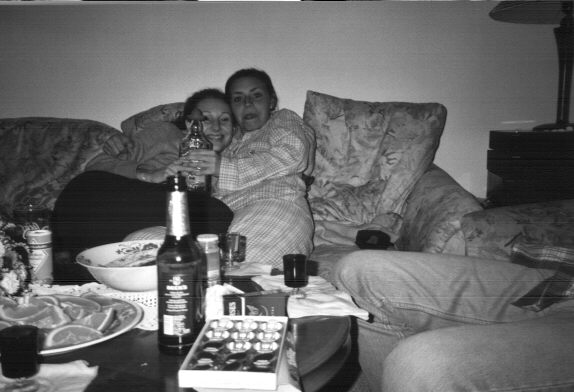

Wie schon angekündigt gibt es jetzt bei mir diese Seite, auf der ich von der Reise nach Büsum berichten werde. Es waren folgende Teilnehmer dabei: Alexandra, Bartek, Christoph (also meine Wenigkeit), Damian, Lukasz (der brauner ist als es auf der Bildern zu sehen ist) und Zuza.
Zur Unterstützung sitzen hier noch Lukasz und Damian, da ich mich nicht mehr an alle Einzelheiten erinnern kann.
Wir bitten im Voraus um Entschuldigung für die langen Wartezeiten, aber wer die Bilder sehen will, der muß halt ein wenig warten. Aber ich kann nur sagen das warten lohnt sich. Leider sind die Bilder nur in s/w da mein Scanner nicht so wollte wie ich. Dafür laden sich die Bilder schneller.
Also nun aber zur Sache:
Wir sind am Freitag so gegen 20 Uhr los gefahren. Die Fahrt war schon echt gut wie man sehen kann
Von Links: Zuza, Bartek, Alexandra (Ola), Christoph, Lukasz, Damian (Wir freuen uns über eure E-Mails)
Leider war sie nicht mehr so toll als ich dann durch Hamburg gefahren bin, der Bartek hat mich so verwirrt, daß ich mich natürlich prompt verfahren habe o.k. es war natürlich nicht Barteks Schuld (ausnahmsweise hatte er recht) es war alles meine Schuld. Trotzdem ist er mir auf den Sack gegangen.
Na ja als wir dann endlich angekommen sind ging es los Bier, Te(e)quila (Zuza wird sich Tod lachen) und was sonst noch so aufzufinden war. Bartek ist dann ins Bett gegangen, nachdem er min fünf mal zurück kam und sagte so Jungs ein trink ich noch, aber das ist dann auch der letzte, waren wir auch nicht mehr lange unten (d.h. Alex, Damian und ich). Zuza und Lukasz haben sich unten noch mehr die Kante gegeben (oder etwas anderes (guck jetzt nicht so böse Zuza)).
Am nächsten Morgen sah das dann so aus Lukasz hat es nicht mehr die Treppe rauf geschafft und mußte auf der Couch schlafen.
Als Zuza und Lukasz fertig waren ist Zuza noch Duschen gegangen und hat es geschafft die Pumpe, die das warme Wasser nach oben pumpt, kaputt zukriegen. Das heißt wir hatten das ganze Wochenende kein warmes Wasser.Also mußten wir kalt duschen und haben uns mit Tequila ,Bier und Liebe warm gehalten. Man sieht wer sich mit was (wem) vergnügt hat.
Wie die Party am Samstagfrüh endete könnte ihr euch nun vorstellen,
Bartrek und ich haben gerade beschlossen (d.h. am 11.08.2002 total besoffen) daß wir zu dieser Geschichte noch etwas hinzuzufügen haben . Nääämlich, daß wir (Bartrek, Lukasz und ich) am Samstag ohne die Frauen und Damian Bier getrunken haben. Das hat sie nicht gerade erfreut, sogar verärgert, so daß sie uns kein Essen machen wollten. Sie haben sich statt dessen ihn den Garten verzogen und haben sich mit Te(e)quila vergnügt, anstatt mit uns.
Jetzt kommen die exklusivsten (wir wollen mit diesem Wort keine Copyright Rechte verletzen) Bilder der Party am Samstagabend.
Gefühl ist gut, Kontrolle ist besser, jedoch beim Alkoholeinschenken verlasse ich mich lieber auf meine langjährige Erfahrung. Wie man sieht hat Lukasz nicht das größte Vertrauen in meine Einschenkkünste und betet das ich nichts verschütte.

Hätten die Frauen uns so lieb wie die Tequilaflasche, würde es in neun Monaten Überraschungen geben.
Nachdem die Frauen die Flasche gelehrt hatten, sind sie in einen Liebesrausch verfallen. Das wollte Lukasz sich natürlich nicht entgehen lassen und nutzte die Situation schamlos aus (Kommentar von Lukasz; Ich habe mein bestes gegeben aber die Frauen haben mich ohne Hemd und Hose ,stehen lassen).
Zum Glück waren die Frauen so gnädig ihm seine Klamotten zurück zugeben.
Als alle wieder ihr Sachen an hatten (ihr müßt ja nicht alles wissen bzw. sehen) ging die jugendfreie Party weiter.
Ich schreibe das unter zwang: Ich fühlte es war warm und feucht, also ergriff ich die Initiative. Dies war der Anfang vom Ende.
Lukasz hat eine andere Taktik gewählt, und wer mußte es ausbaden ? Ich hatte Alexandras Socke auf dem Kopf. Glaubt mir ich wollte die Socke nicht als Ganzkörperkondom benutzen.
Die Nacht, die Party, der Alkohol neigte sich dem Ende. Und wenn sich nicht besoffen sind, dann saufen sie noch heute. Am Ende wurden von uns fünf Flaschen Tequila und zweieinhalbe Kisten Bier vernichtet.
Und die Moral von der Geschichte': Wie man sieht kann man auch ohne Alkohol Spaß haben.
Zum Schluß noch ein Nachtrag wir haben am Anfang vergessen den wichtigsten und zuverlässigsten Teilnehmer unseres Road Trips gebührend zu würdigen: Nämlich ein 1978er Mercedes Benz 408D mit drei Sitzbänken, einer Mikrowelle als Tisch, einem Blaupunkt Radio mit zwei freiliegenden Lautsprechern und einer 5-Gangschlatung mit der eigentlich keiner so richtig klar kam.
Dieses Foto mußte Lukasz machen. Eigentlich hatten wir einen Jungen gefragt ob er uns alle fotografieren kann, aber irgend wie kam er mit der schweren Technik einer einfachen Kamera nicht klar und wir konnten ihm leider auch nicht erklären wo er zu drücken hat, da er weder uns, noch wir ihn verstanden haben. Aber ich kann euch versprechen spätestens wenn wir zu Lukasz Geburtstag wieder nach Büsum fahren, werden wir einen kompetenten Fotografen finden, der wenigstens ein Foto von uns allen macht.